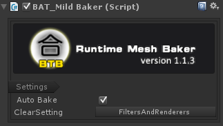
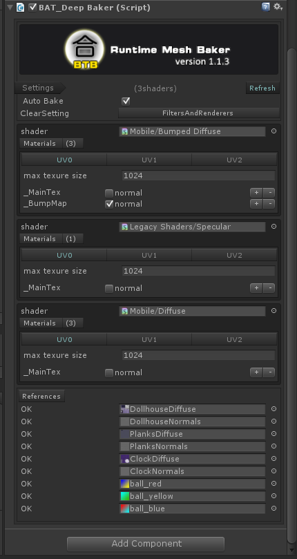
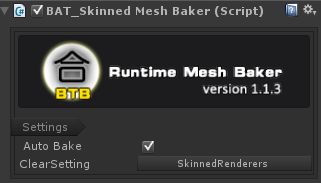

Runtime Mesh Baker v1.1.3

Introduction:
Help you to combine meshes 、 materials and textures to reduce draw calls in runtime！
Got less draw calls than static and dynamic batching.
Got more resource saving than non-runtime baking.
- Support merging skinned-meshes of same material
- Very simple to use, learn in 1 minutes
- Works with any material and shader
- The most effective solution of combination
- Automaticly chek and configure the shaders
- Runtime combine quickly
- Runtime auto garbage recyling.
- Undo Supported, friendly UIs.
Warning: this tool cannot combine meshes which vertext count are above 64k, because it is the limit of unity.
Home Page:http://www.lonelywalker.cn
Support Mail: mailoflonelywalker@qq.com
My Blog: http://blog.csdn.net/andrewfan
Version Changes:
Version 1.1.3 2017.11.15
- Fixed bug: error combination of mesh for skinned-meshes
- Add Example: unitychan for skinned-meshes
Version 1.1.2 2017.9.18
- Support merging skinned-meshes of same material
Version 1.1.1 2017.9.10
- support add baking script at runtime
- support the merging of multiple sub-meshes and multiple materials
Download URL:
Runtime Mesh Baker Of AssetStore
Usage:
-
Get your GameObjects ready for baking, just put them into one tree hierarchy, all GameObjects have the same top parent.
-
Select the top parent,then select the menu "Window/Rumtime Mesh Baker/Add MildBaker" or "Window/Rumtime Mesh Baker/Add DeepBaker"or "Window/Rumtime Mesh Baker/Add Skinned MeshBaker".
At runtime,you can do it in you code:
gameObject.AddComponent<BAT_DeepBaker>();//for static objects , eg stones,trees
//or
gameObject.AddComponent<BAT_MildBaker>();//for static objects , eg stones,trees
//or
gameObject.AddComponent<BAT_SkinnedMeshBaker>();//for motion objects , eg characters
-
It's ok. let's run it. Auto baking should be working.
Mild Baking of meshes:

- Auto Bake: wheter do baking automatically
- ClearSetting: after baking, it would do some clearing operation.
Deep Baking of meshes:

- Auto Bake: wheter do baking automatically
- ClearSetting: after baking, it would do some clearing operation.
- Refresh button: refresh the configurations of baking.
- Shader: the group basis of meshes is the shader.
- Materials: materials use the same shader.
- UV configure- max texture size: max texture size could be when baking.
- UV configure- texture items: list all texture varient names of current shader to combine.you don't need to modify the items by default.
- References: list all the textures referenced. If any red item is shown,you can fix them by the "Fix troubles" button on the bottom.
Mild Baking of skinned-meshes:

- Auto Bake: wheter do baking automatically
- ClearSetting: after baking, it would do some clearing operation.
It does the same work with Mild Baking,but for skinned-meshes.
Baking Process:
- Search the target gameobject, check all MeshFilters and MeshRenderers.
- Find out all meshes and materials, and seperate the meshes into diffrent groups by materials(Mild Baking) or Shaders(Deep Baking) .
- Deep baking need to combine textures and generate new material.Mild baking will just use the original material.
- Create a new baking node and start mesh baking by groups,if group's mesh vertex count is overflow, then bake to new one mesh.
- Set the MeshFilters by new created mesh,and set MeshRenderers by the material of current group.
- Do clearing,it would remove the original MeshFilters and MeshRenderers by default.
Diffrence of 3 baking method:
|
Basis |
Texture Combination |
Mesh Combination |
Draw calls |
Multiple SubMesh |
Used for |
| Mild |
material |
not needed |
needed |
less |
not support |
static objects |
| Deep |
shader |
needed |
needed |
least |
support |
static objects |
| Skinned |
material |
not needed |
needed |
less |
not support |
character objects |
Troubleshooting
If Baking error eccours,check these items:
- Make sure your Game Objects are not set static flags when deep baking.
- The texutes should be readable and set the right format when deep baking.You can fix this by "Fix troubles" button.
- If your material has set Tiling parameters(not 1), then the material can't not do deep baking.You could seperate these GameObject out of the baking tree.
- If you are using the BAT_SkinnedMeshBaker， be aware with the transformation of original skinned-mesh componenet, the must be set to zero scalation、translation and rotation to its Animation or Animator,if don't, you may get bad ragdolls.
Future Version
- to support skinned meshes
- to deal with tiling textures
- to support lightmapping